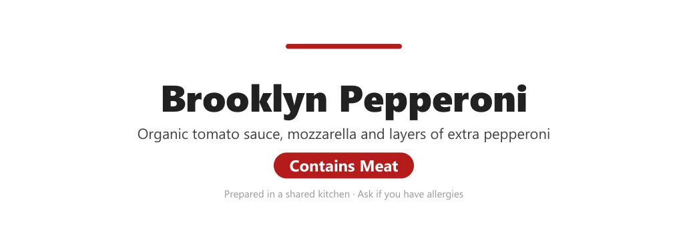

Event operations: catering, tent cards and nametags
Catering for a three-day workshop, and the food tent cards and nametags that Virtual Office prints: 7 issues flagged before the guests arrived.


Result
- 7issues flagged before the guests arrived
- 210meals over three days for 35 guests
- 18vendors researched
Delivered within budget; a lunch set to arrive 4 hours early was fixed in time.
The 7 issues flagged
- a missing dietary split on one invoice
- an invoice that didn't match its own email
- a lunch delivery set 4 hours early (fixed before the event)
- a pricing discrepancy
- allergens to confirm (walnuts, dairy)
- egg-free counts
- quotes still to confirm
The problem
Real events live or die on the day's details: food that suits every guest, labels people trust and badges that print right. One was a three-day workshop for a corporate leadership cohort: 210 meals over three days for 35 guests.
What I built
Catering planning: 18 vendors researched, 5 costed options, a plan revised as dietary needs arrived, and every invoice checked against it before the event. Plus Virtual Office's generators for badge sheets and tent cards that read from both sides.
Workshop catering: from research to rundown, step by step:
- Research: 18 vendors, including two Indigenous-owned caterers
- Costed plans: 5 plans, all under budget; a 12-slide options deck
- Plan, v1 to v8: Seven revisions the night the dietary needs arrived
- Final rundown: Every invoice checked: 7 issues flagged
Calls I made
- Check every invoice before the day. Against the plan and the email trail.
- Wrote strict dietary label rules. Vegan only with a dairy-free cheese and a vegan sauce; never "gluten-free".
- One person per badge. Never repeated to fill a sheet; printed at 100%.
Full detailsHow it works, the full feature list, decisions, numbers and next steps
Tools
- Excel workbook
- Options deck
- Catering plans and a QA rundown
- Python generators
- Headless Edge (HTML to PDF)
- Word XML
- PIL text measuring
On one caterer's nutrition chart, "V" means energy, not vegetarian.
The problem
Every ISTEP event needs food labels and nametags. Labels have to be accurate about what's in the food, and badges have to print exactly on the sheet. Both are skills inside Virtual Office, used by Coco, the event-manager coworker.
A three-day workshop for a corporate leadership cohort: 35 guests, breakfast and lunch each day, so 210 meals, on a fixed all-inclusive budget. The dietary requirements arrived on Oct 23, four days before the event, and the room had tablet-arm chairs.
What I built
Catering a three-day leadership workshop
- A meal-plan workbook (Sept 30): a budget summary comparing 5 plans, line items with sources, 18 vendors researched (including two Indigenous-owned caterers), and next steps.
- An options deck (12 slides): five plans, all under budget, from a simple campus option to a premium one. It recommended the best-value plan, with the simplest option and a hybrid as alternatives.
- The catering plan, version 1 to version 8: seven revisions on Oct 23, the evening the dietary requirements arrived.
- egg-free throughout, and a gluten-free guest
- fixed a "Mexican twice on Day 1" repeat
- a boxed-versus-buffet decision, with food-safety holding temperatures
- nut and halal flags
- separately packed vegan options for halal and vegetarian guests
- dropped a dish that couldn't be made gluten-free
- added coffee
- A final rundown (Oct 26): it checked every invoice and quote against the plan and the email trail, and found 7 action items:
- a missing dietary split on one invoice
- an invoice that didn't match its own email
- a lunch delivery set 4 hours early (fixed before the event)
- a pricing discrepancy
- allergens to confirm (walnuts, dairy)
- egg-free counts
- quotes still to confirm
Food tent cards
- Oct 1 to 2: two plain sets, printed for real events.
- Oct 7, the first branded mock: rejected. The logo's built-in padding made it tiny, and the design wasn't distinctive.
- Oct 7, version 2 (approved): a menu-card layout with a coloured side strip; a 33 pt Cambria dish name with an italic description; a circular badge where the highest rule that applies wins (Vegan, Halal, Veg, Pork or Meat); a trimmed logo and a "Catered by" footer; and two cards per Letter page, with the top face printed upside down so the folded card reads from both sides of the table.
Nametags (6-up badge sheets)
- Geometry: 4 by 3 in badges, 6 per Letter sheet, 0.25 in from the left and 1 in from the top, with no gaps, matched to the label maker's published template.
- Two styles: the ISTEP default (a navy band and a teal rule, with the name stepping down from 28 pt to 22 pt to stay on one line), and a workshop style with a black-and-white campus photo under a white wash and names only.
- About 100 badges printed so far, for two real events.
How it works
- Tent cards: a Python generator, with every string escaped, renders to PDF through headless Edge. A 9-test plan includes prompt injection.
- Nametags:
build_nametags.py(394 lines) writes Word XML directly, measures text with PIL so each name fits on one line, and has a--verifymode that checks the PDF's pages, size, text order and edge clearance.
Key decisions
Catering
- HST costed at the full 13%, while noting that the university's net cost is much lower. That left a hidden cushion.
- Boxed meals, to suit the room's tablet-arm chairs.
- Procurement rules followed: vendor cancellation terms, university billing and the campus food form.
- Sustainability: water in pitchers, compost, and leftovers to food-rescue charities.
- Dietary handling: individually named labels, and written nut and cross-contact confirmations.
Tent cards and nametags
- Dietary rules written into the skill. Vegan only with dairy-free cheese and a vegan sauce; halal only when the user confirms; never "gluten-free"; and type never below 28 pt.
- A trap, noted. On one caterer's nutrition chart, "V" means energy, not vegetarian.
- One person per badge, never repeated to fill a sheet.
- Found the real cause. Reported "gaps" on the badges were really the printer's "Fit to page" scaling plus the sheet's tear-away frame. The fix was full bleed (1/8 in past the edge) and print-at-100% instructions. Another lesson: Word shifts tables left by the first cell's padding.
Results and status
- 210 meals over three days for 35 guests, delivered within the budget.
- The late-delivery fix landed before the event.
- The work fed Virtual Office: a nametag style, a vendor added to the list, and the food tent cards.
Tent cards have been in the plugin since v0.16.2 (Oct 7) and nametags since v0.16.5 (Oct 8). Both have been printed for real events.
What I'd do next
- Re-render the nametag samples with dummy names, so they can be shown here.
- The catering work is finished. Its reusable pieces already live in Virtual Office and in the tent cards and nametags on this page.